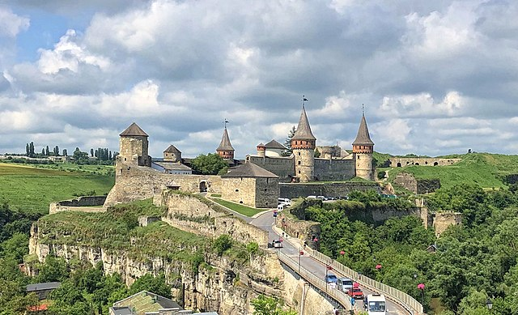
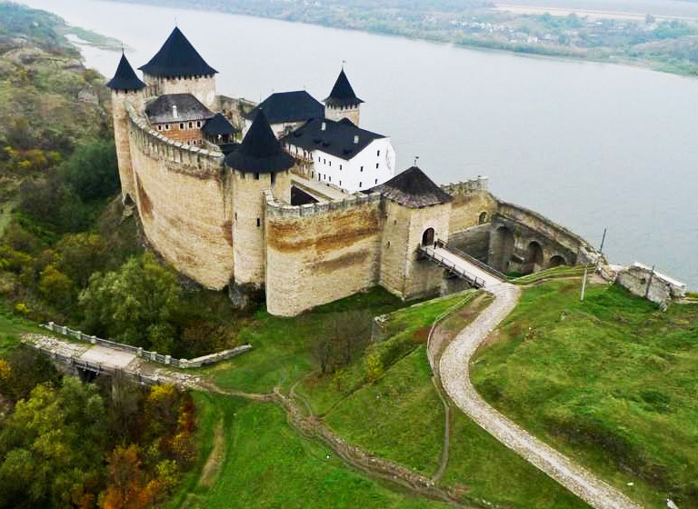
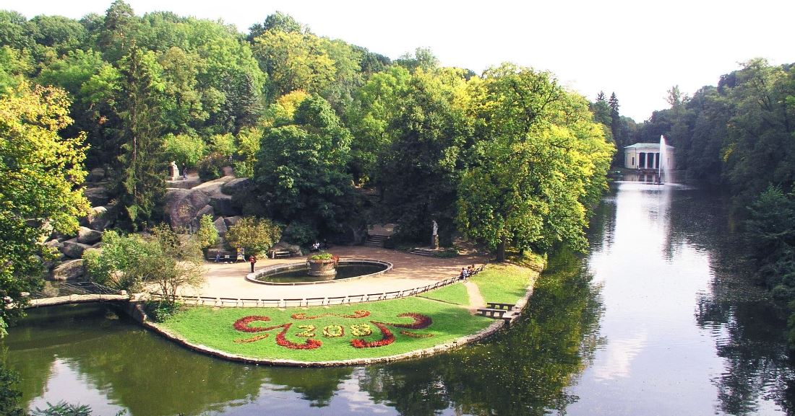
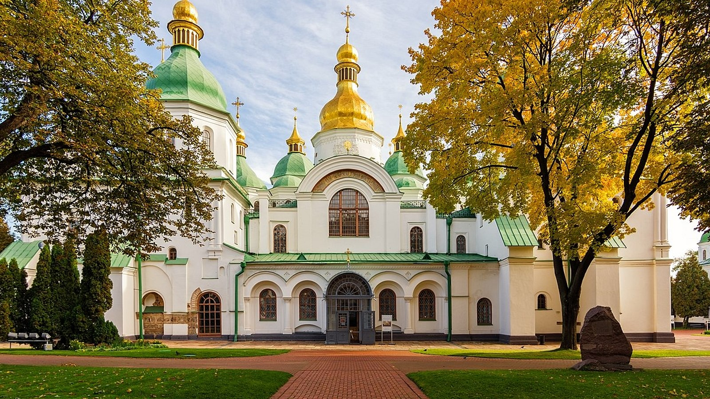
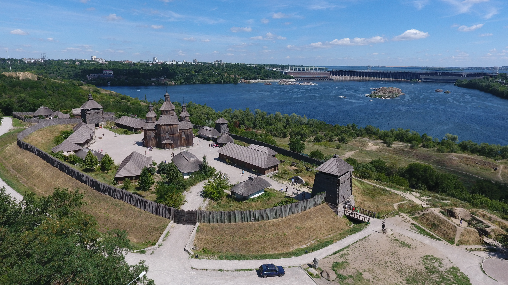
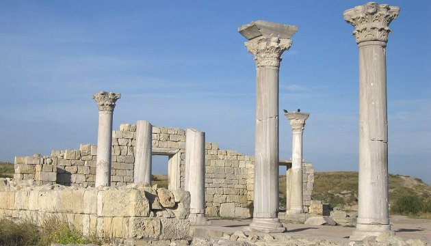

7 неймовірних місць України, де повинен побувати кожен.
"Сім чудес України" — це сім історико-культурних пам'яток України. Список складено за версією оргкомітету всеукраїнської Сім чудес України ще 21 серпня 2007.
текст червоний?
"Заповідник "Кам'янець"
Кам'янець-Подільська фортеця (Хмельницька область) — стародавня фортеця, розташована на скелі над річкою Смотрич. Вважається найвідомішим туристичним місцем України. Перша писемна згадка про неї датується 9 століттям. Вона вражає своєю масштабністю і красою, а також відіграє важливу історичну роль як оборонна споруда. Вона складається з одинадцяти мурованих башт висотою до 22 метрів. Загальна площа замку — 4, 5 га. Вона більша за площу шести футбольних полів. За легендою на території фортеці є підземний хід довжиною 30 км. Цей прохід поєднує Кам’янець-Подільську та Хотинську фортеці, проте його досі ніхто не знайшов.
"Хотинська фортеця"
Хотинська фортеця (Чернівецька область) — історична фортеця, яка знаходиться на скелі біля міста Хотин. Вона слугувала важливою оборонною позицією та має дивовижні архітектурні деталі. Хотинська фортеця була заснована в XIII-XVIII столітті у місті Хотин Данилом Галицьким. Під стінами замку проходило безліч запеклих боїв, та прославилась вона великою битвою в 1621 році під керівництвом гетьмана Петра Сагайдачного, коли вдалося зупинити наступ Османської імперії та врятувати Європу. Згодом фортеця стала використовуватися як резиденція.
"Софіївка"
Парк "Софіївка" (Черкаська область) — унікальний парк з ландшафтним дизайном, створений у XIX столітті за ініціативою графа Потоцького. Парк славиться своїми різноманітними пейзажами, статуями та фонтанами. Дендропарк Софіївка є пам’яткою світового садово-паркового мистецтва кінця XVII століття. Його площа займає 160 га, а в парку росте понад 2000 різних видів дерев та кущів. Краса природи та продуманий до деталей ансамбль парку не залишає байдужими відвідувачів вже понад 200 років.
"Софія Київська"
Софійський собор (Київ) — історична православна церква, яка була заснована в XI столітті. Собор має унікальну архітектуру та культурну цінність. Пам’ятка архітектури та мистецтва "Софія Київська" була заснована князем Ярославом Мудрим на початку XI століття. В його стінах відбулась коронація Володимира Мономаха. На стінах собору збереглися 260 кв. метрів мозаїки та 3000 кв. метрів старовинних фресок.
"Києво-Печерська Лавра"

Києво-Печерська лавра (Київ) — це монастирський комплекс, який включає давні православні церкви, музеї та печери зі святинями. Вона є однією з найвідоміших святинь України, світова спадщина ЮНЕСКО. За майже тисячу років існування Лавра пережила нищівні напади і пожежі, але її щоразу рятували та відбудовували. На сьогодні Києво-Печерська лавра займає понад 23 га території. В її склад входить 144 споруди, серед яких підземні комплекси, храми, стародавні пам’ятки архітектури та музеї. Щороку сотні тисяч туристів з усього світу приїжджають у Київ, щоб помилуватися виглядом найвідомішої святині України. Знаковим в історії України є те, що нарешті святиня перебуває під контролем Православної церкви України.
"Хортиця"
Острів Хортиця (Запоріжжя) — найбільший острів на Дніпрі, який відігравав важливу роль у козацькій історії. Тут можна знайти археологічні розкопки, музеї та козацькі курені. Перші жителі оселились тут 12 тисяч років тому.
Легенда розповідає, що у 972 році тут загинув київський князь Святослав. У добу козаччини острів Хортиця відігравав важливу роль, хоча Січі тут ніколи не було. На Хортиці розташоване найбільше творіння природи “Запорізька миска” — це заглиблення в скелі діаметром півтора метра, в якому за легендою козаки варили галушки.
"Херсонес Таврійський"
Херсонес Таврійський (Севастополь) — місто, засноване греками, що проживали на цій землі в V столітті до н.е. Свого часу Херсонес був потужним торговельним та політичним центром. У Херсонесі можна побачити руїни давньогрецьких споруд та амфітеатр.
На жаль, нині Херсонес перебуває на території анексованого росією Криму, втім ми всі віримо, що зможемо йо відвідати після перемоги України.
Ці сім чудес України дійсно представляють унікальні історичні та культурні пам'ятки країни, які варто відвідати, щоб пізнати багатогранну спадщину України.